2012-02-28 - АСПЕКТЫ АГАРТАЛЫ
1. Короче, я здесь. Но тут сразу возникают два важных вопроса: "Я - это где?" и "Здесь - это кто?" С которого начинать, каким заканчивать? Наверно, оба надо как-то осветить. Но - ломает. Вряд ли я вообще в состоянии что-то освещать. Поэтому вот вам картинка про меня, и пойдём дальше.
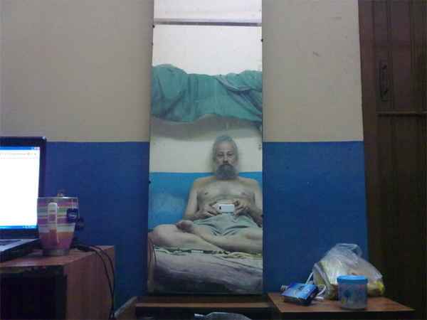
2. Начну с дворца. Здешняя столица называется Агартала. Она славится своим дворцом. И да, дворец у них есть. Невысокий, но широкий, с двумя большими прудами и музыкальным фонтаном. Прудов тут вообще много, а дворец один. Ни разу не Тадж Махал, но всё-таки.
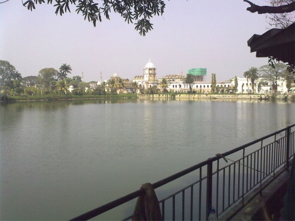
3. Туристов здесь толпы, но всё больше из Бангладеша, побухать приезжают. Один я среди них как меловой утёс, трезвый и небенгальский. Хожу-брожу, осматриваю достопримечательности. А они на меня таращатся.
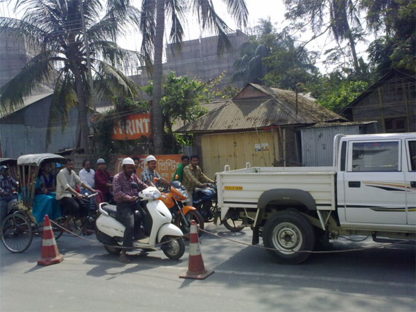
4. Здесь вообще ничего не происходит. Говорят, что в начале 1970-х тут было какое-то "трипурское восстание", и с тех пор штатом рулит нерушимый блок коммунистов и социалистов. Если присмотреться к этой фотке, можно разглядеть на красных флажках серпы и молоты. Это не фотошоп, это реально серпы и молоты. Прямо как в Непале.
5. В день приезда я имел беседу с учителем математики, случайно встреченным, по-английски. Беседа была ни о чём, а контактов его не взял, о чём впоследствии жалел неоднократно. Больше тут ни с кем не побеседуешь, а непонятного вокруг больше чем много. Можно сказать, почти всё. Ну, вот, например, обилие мужиков в строительных касках - они что, все строители? Тогда почему кругом такая разруха? Нет, должно быть, не строители они, а просто форма одежды у местных такая, вроде как тюрбан у сикхов. Впрочем, это всё чисто теоретические догадки, всё равно ведь никто не объяснит.
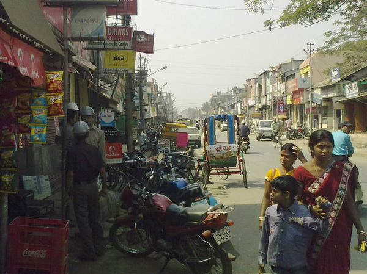
6. Я почти ничего не читаю, совсем ничего не пишу и даже бханга не ем. Просто гуляю и сплю. Спится под москитной сеткой крепко и без сновидений. Иногда я думаю: "Неужто я спать сюда приехал?" и заставляю себя выйти на улицу. По вечерам весь город пахнет камфарой, а в остальном - как везде. Можно, в принципе, и не выходить.
7. Вчера ездил в местный храм Четырнадцати Богинь. Богини реально дикие, жрут сырое мясо. При мне перед храмом зарубили трёх козлят, очень оперативно и по-деловому: завернули им руки за спину, засунули башку в станок, закрепили планкой и кривым мечом с одного удара снесли. Пока я фотик доставал и ракурс искал, всё уже и закончилось. Так что снял я только алтарик с человечками, которые намалёваны сами понимаете чем. А жертвоприношение, наверно, можно и на ютубе посмотреть.
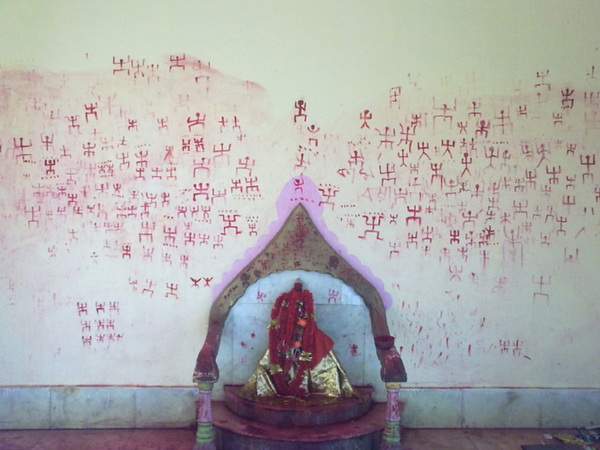
8. Всё здесь кажется обычным, но только на первый взгляд. Вот это, например, с виду вполне обычный храмик, а на самом деле
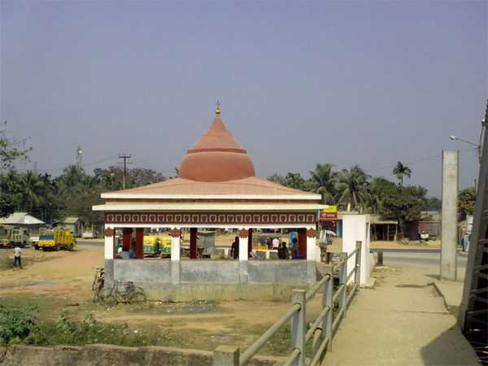
автобусная остановка в пригородном селе. А вот это уже не остановка
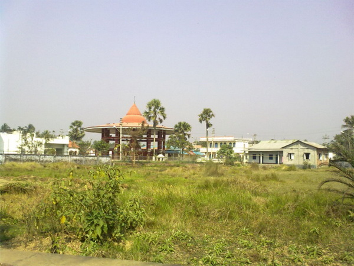
а храмик в том же селе. Различие очень тонкое, улавливаете? А вот это похоже на выброшенный комод, а на самом деле
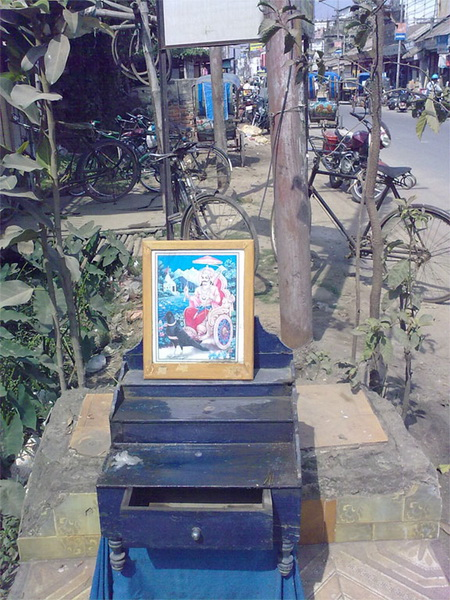
уличный алтарь Сатурна. А вот это я обнаружил в скромном сарайчике, который в потёмках принял за сортир. Захожу - а там такое.
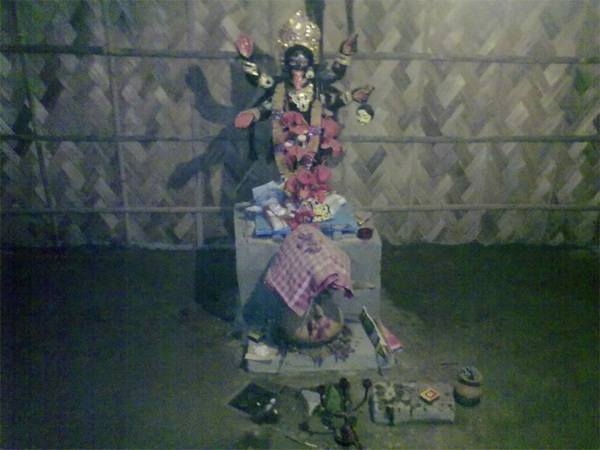
9. Сегодня взял себя в руки и отправился в Удайпур, посмотреть развалины древней столицы. Сорок пять километров автобус преодолел всего лишь за два часа, но никаких развалин в посёлке не оказалось, а только приземистый харм Сундари, в народе очень уважаемый. Здесь тоже рубят козлов, но я малость опоздал и опять не успел ничего заснять. Чтобы не уходить с пустыми руками, сфотал вот эту каменюку.
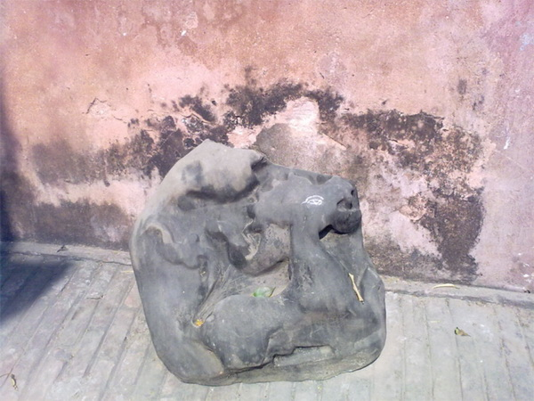
Очень древняя, наверно. А развалины столицы, как мне один местный объяснил, не в самом Удайпуре, а в Мелагхаре, это сорок км отсюда. "Ещё два часа, а потом ещё назад два часа!", - подумал я и поехал обратно в Агарталу. Так я сэкономил четыре часа. Плюс ещё, по дороге увидел вот такого вот мужика с козами
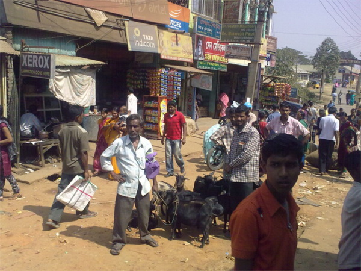,
вот таких девчонок
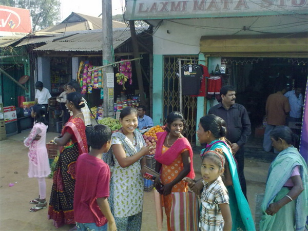
и таких вот тёток.
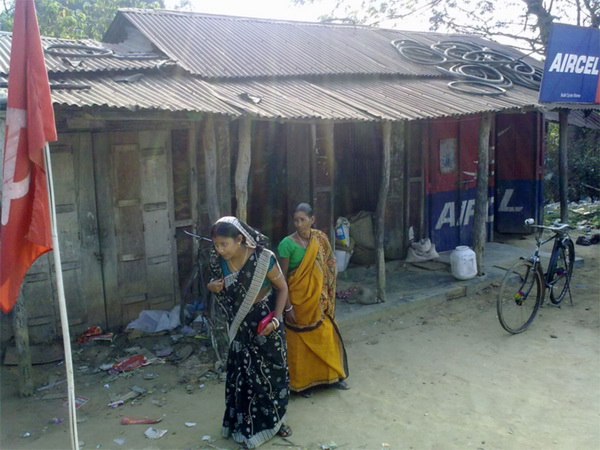
Тётки, кстати, тут неожиданно красивые и толстые. И все поголовно жуют пан - вот эта как раз нажевалась и сплёвывает.
10. В день моего приезда был праздник Шиваратри. Многие местные по этому поводу набухались и барагозили всю ночь до рассвета. В моей гостиницы соседи гудели ещё два дня после праздника - почти как наши, только без мордобоя. Я к ним не присоединился - я же не понимаю по-бенгальски.
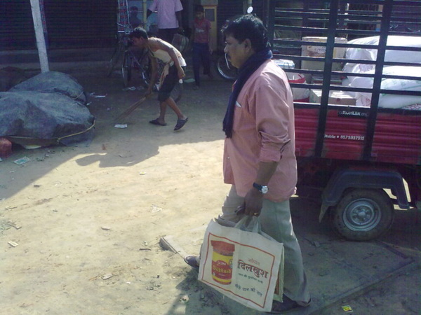
11. В городе живут тирипурцы и бенгальцы. Трипурцы всегда здесь жили, бенгальцы из Бангладеша понаехали. Так и живут теперь вместе. И, вроде бы, не мучаются.
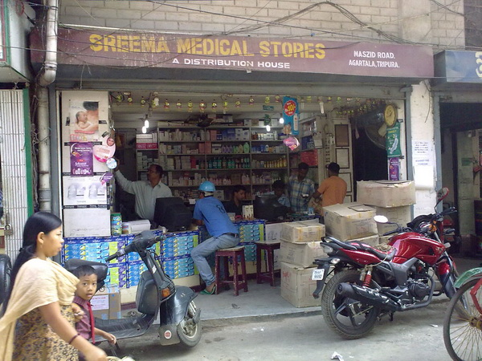
12. Иногда вечерами я залезаю в Интернет. Там всё как обычно, лигалайз в Украине ещё не наступил. А вот есть ли лигалайз в Трипуре? Этого я так и не понял. Бханг-шопов тут, вроде бы, нет - или есть, но по-другому называются. Слово "бханг" тут никто не понимает, конопли в окрестностях я не видел, знакомый запах ни разу не ловил. И никто мне ничего такого не предлагал, хотя предлагают всегда и везде.
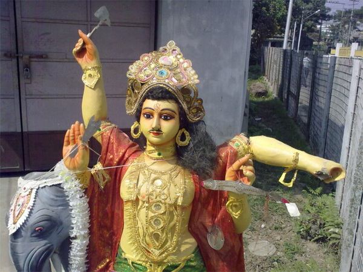
13. По ходу, это не сильно интересный штат. Говорят, что Ассам гораздо лучше. Завтра я туда отправлюсь. Билет на автобус куплен - пожалуй, пора уезжать. Жаль, что я не понимаю по-бенгальски, и на хинди знаю только слов 50. Здесь без этого никуда. С трэвел агентом, например, мы минут пятнадцать беседовали по-английски, пока до него дошло, что я хочу билет на автобус - а до меня дошло, что он продаёт только авиа и жд. Так мы с ним и расстались, и пришлось мне за билетом на автовокзал переть. Он на окраине города, это примерно полчаса пешком из центра.
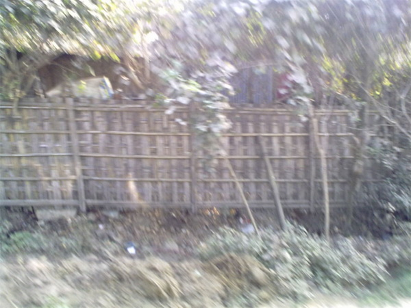
14.
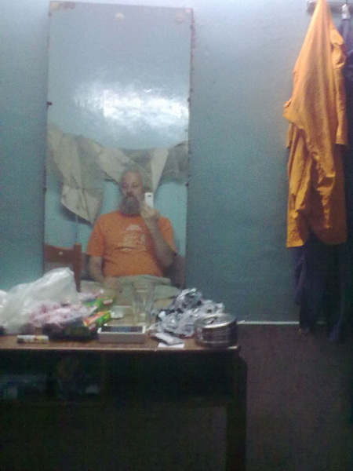
Ну, вот я и в Ассаме. Перечитал эти заметки. Ничё так, покатит. Сейчас добавлю фотки - и в Интернет.